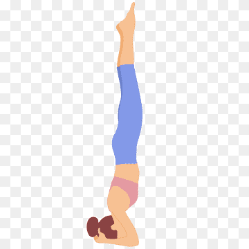

Exercise Description
Start in a forearm plank position with your forearms on the ground and your body in a straight line. Walk your feet in towards your body and lift one leg up, followed by the other, until your body is vertical and balanced on your forearms.
Reps and Sets
Beginners: 3 sets of 30-60 seconds
Rest time between each set: 45secs
Video Implementation